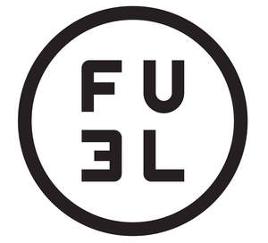

Trade Mark Journal No.2025/039 26 September 2025
UK00004261938 10 September 2025 (1,4,6,20)

- Class 1
- Chemical additives for fuel; Detergent additives for fuels; Chemical additives to motor fuel; Chemical additives for fuel treatment; Chemical additives for motor fuel; Chemical compound additives for fuel; Additives, chemical, to motor fuel; Chemical additives for diesel fuels; Anti-freezing additives (Chemical -) for fuels; Additives for raising the cetane number of diesel fuel; Chemical additives for use in the production of fuels; Chemical additives for use with internal combustion engine fuels; Chemical additives for fuel injection system cleaners; Chemical adsorbents for removing impurities from fuel; Chemical preparations for use as additive to fuels for combatting pollution; Chemical preparations for use as additive to fuels for improving combustion; Detergent additives to petrol; Chemical additives for petrol; Detergent additives to gasoline [petrol]; Chemical products derived from petroleum.
- Class 4
- Non- chemical fuel additives; Non-chemical additives for fuels; Additives, non-chemical, to motor fuel; Anti-freezing additives (Non-chemical -) for fuels; Fuel; Fuels; Biodiesel fuel; Fuel mixtures; Fuel oil; Fuel gas; Diesel fuel; Alcohol (fuel); Automobile fuels; Gas fuels; Mineral motor fuel; Industrial fuel oil; Synthetic gas [fuel]; Solidified gases [fuel]; Vaporized fuel mixtures; Fuels from biological sources; Fuels derived from oil; Fuel with an alcoholic base; Binding preparations for solid fuels; Hydrocarbon fuels derived from tar; Fuels with an alcoholic base; Fruitwood charcoal for use as fuel; Smokeless compositions for use as fuels; Petroleum coke for use as fuels; Non-chemical additives for motor fuels; Butane gas for use as a fuel; Emulsions of bitumen for use as fuel; Smokeless solid compositions for use as fuels; Charcoal based products for use as a fuel; Petrol; Petroleum; Liquefied petroleum; Artificial petroleum; Lubricating oils for petrol engines; Petroleum, raw or refined; Diesel oil.
- Class 6
- Containers of metal for liquid fuel; Fuel cans of metal; Jerrycans of metal; Metal barrels; Petrol cans of metal.
- Class 20
- Fuel cans (non-metallic); Receptacles, not of metal for liquid fuel; Containers, not of metal, for liquid fuel; Non-metal barrels; Jerrycans, not of metal.
NEMESIS LIMITED
Representative: Lucidity IP